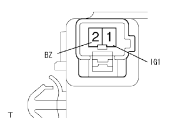

ABS & TRC & VSC & BA system skid control buzzer (VSC buzzer) with eBD does not sound |
| Step 1 | Skid Control Buzzer Active Test implementation |
Use SST (TASCAN) to perform an active test of skid control (VSC buzzer).
|
| ||||
| NG | |
| Step 2 | Wire harness inspection |
|  |
Use SST (Toyota Electrical Tester) to check the voltage between the buzzer 1 (IG1) terminal ← → body.
|
| ||||
| OK | |
| Step 3 | Skid control buzzer inspection |
With the connector connected with Ig ON, short -circuit the buzzer 2 (BZ) terminal with the body ground.
|
| ||||
| OK | |
| Step 4 | Wire harness inspection |
 |
The 30 (BZ) terminal of the brake actuator wire is short -circuited between the body grounds and the buzzer is inspected.
|
| ||||
| OK | |
| Step 5 | Skid Control Buzzer Active Test implementation |
Use SST (TASCAN) to perform an active test of skid control (VSC buzzer).
|
| ||||
| OK | ||
| ||